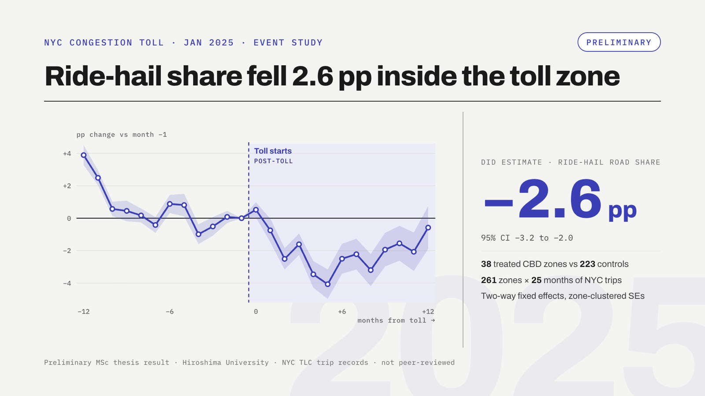
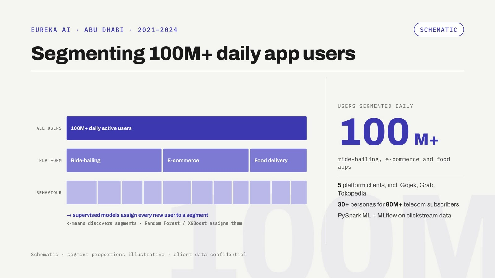
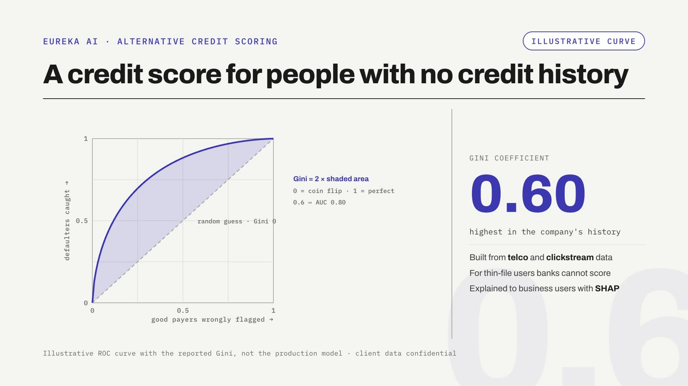
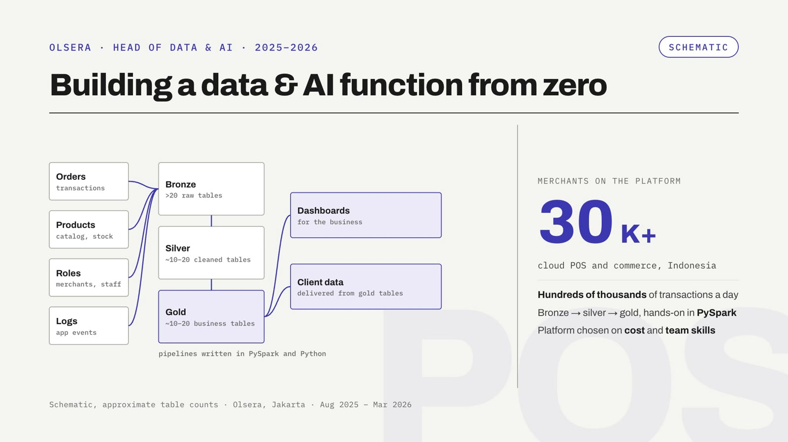

Dhaneswara Mandrasa
I'm Dhanes, a data scientist and MPhil researcher in Smart Mobility at Hiroshima University, in the Urban and Data Science Lab under Prof. Tao Feng.
My research asks a question every pricing team using LLMs will hit: can LLM-generated features be trusted inside a demand model? I built an LLM evaluation harness that scores 15 neighbourhood features for 261 New York zones with three models and five prompt wordings, then measures how much of each score is real signal; 14 of 15 pass. I use them in a geo-experiment on a real price change, New York's January 2025 congestion toll, where a preliminary estimate shows ride-hail share fell 2.6 pp inside the tolled zone. Next: whether the LLM features improve price-response estimates over a model without them.
Before this I spent eight years in industry. At Eureka AI in Abu Dhabi I worked with data from seven telecom operators across Asia and the UAE: I segmented 100M+ daily app users for clients such as Gojek, Grab and Tokopedia, built an alternative credit score from telco behaviour, and led the market-intelligence products that grew from 5% to 70% of company revenue. Most recently I was Head of Data & AI at Olsera, building its data function from scratch.
I'm open to remote roles in consulting, team leadership and applied research.
In 30 seconds: the research, then the industry work.
I'm interested in using LLMs as measurement instruments: turning unstructured text about places into features that are reliable enough to enter causal and demand models, and checking whether they help.

Three LLMs score 15 place features for 261 NYC zones, with reliability measured before use (14 of 15 reach G ≥ 0.85). A difference-in-differences on the January 2025 congestion toll finds a 2.6 pp drop in ride-hail share.

Sessionised app traffic, separated drivers from customers and transactions from browsing, then built Word2Vec personas for Gojek, Grab, Tokopedia and foodpanda. The products grew from 5% to 70% of company revenue.

Top-up, call and online behaviour for people with no credit file. Gini 0.6, the best in the company's history.

Bronze, silver and gold pipelines in PySpark for a commerce platform with 30K+ merchants.
| iZeno | Led AutoML credit scoring (pipeline run time −75%) and a root-cause diagnostic system for plantation yield (+18%). |
| Bhumi Varta | Retail site selection that guided growth from under 100 to 200+ outlets, and socio-economic status from satellite imagery at 100 m. |
| SKK Migas | An early ML model for oil and gas resources across 200+ working areas. |
Updated October 2026 · design adapted from Jon Barron's website